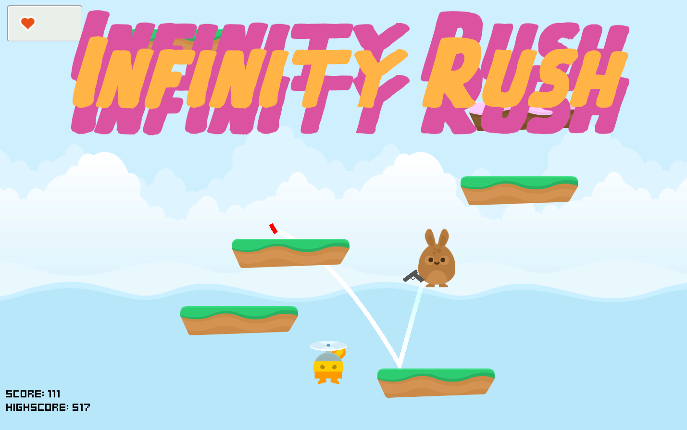

All game jam games
Left Behind - April 2021

3D Adventure game with smooth and simple graphics. features streamlined map building tools and drag-and-drop ready gameplay elements (turrets, gates, switches).
Made in about 15 hours using the same art kit as other 7 developers for a Youtube collaboration video.
Download the game Browse the codeTrouble in Civilian Town - November 2020
Among us-inspired game where you must guess who the impostor is from a set of civilians wandering around
Title inspired by the "Trouble in Terrorist Town" gamemode of Garry's Mod
Game made in 48 hours for the //TODO Game Jam #2, theme "There's no time to lose"
Play the gameSolo Wing - September 2020
Solo Wing is a third-person 3D space shooter featuring a simple mouse-only flight controller taking the player in a one-on-one dogfight against an AI enemy!
Game made in 7 days for the SGDJamII; Theme: "Duel"
Download the gameArtifact - April 2020
Artifact is a simple 2D game focused on resource and time management, in which you must collect berries to feed the "Artifact", while killing 2 different types of enemies.
Made in 72 hours for both Ludum Dare 46 and Torneo GJA round 1; Theme "Keep It Alive"
Play the game Browse the codeA Regular Game - August 2019
A Regular Game is a simple platformer game made in collaboration with Brazilian artist @Slimelvl2 in which the "game" tries to deceive the player into collecting stars for him.
Made in 7 days for the Community Game Jam; Theme: "The Game Is A Liar"
Play the gameInfinity Rush - August 2019
Infinity rush is a simple infinite jumper game with a shooter twist. Features infinite map generation, bouncing bullet physics and a simple shop system. (the later added as a post-jam revision)
Made in 48 hours for the Kenney Jam 2019; Theme: "Unlikely Combinations"
Play the game Browse the codeDyson Harvest - July 2019
Dyson Harvest was made with a focus on resource management and based around the concept of Dyson Spheres. The player must manage its energy, which is obtained from satellites around a star while defending them from waves of enemies.
Made in 10 days for Kongregate's Game in Ten Days #92 jam; Theme: "Stars"
Play the game